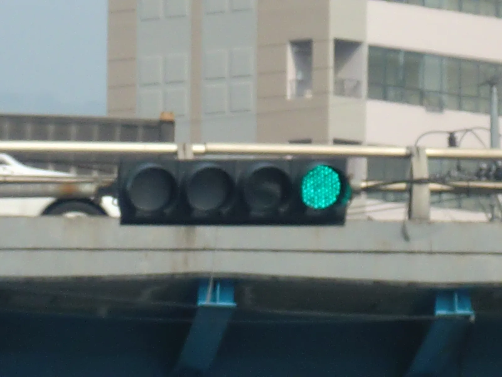
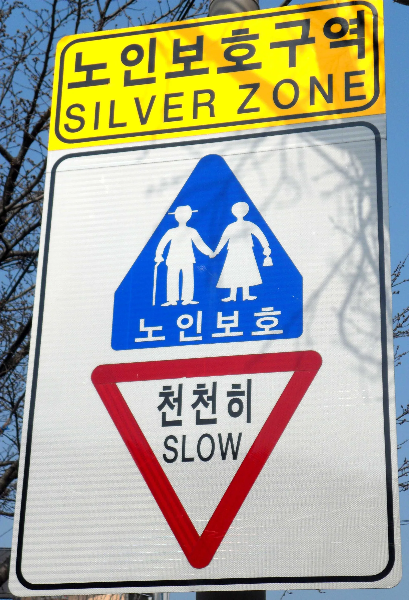

▲ 같은 도로 위에서도 연령대와 성별에 따라 사고가 발생하는 양상은 통계적으로 뚜렷하게 갈린다 ⓒ Wikimedia Commons (Unsplash, CC0)
20대 운전자와 60대 이상 고령운전자가 낸 대형 교통사고 건수는 지난 10여 년간 비슷한 수준을 유지해왔다. 그런데 두 연령대의 사고를 들여다보면 발생 원인도, 결과도 다르게 나타난다. 20대는 과속·신호위반 등 공격적 운전으로 인한 사고가 두드러지고, 60대 이상은 판단 지연·안전운전불이행이 상대적으로 많다.
성별에 따른 사고 통계도 자주 오해를 낳는다. 사고 발생 건수와 사고의 심각도(치명률)는 다른 지표이며, 이 차이를 성향이나 능력 문제로 단순화하기보다 운전 경력·주행거리·차종 등 통계적 배경을 함께 봐야 한다. 이 기사는 도로교통공단 TAAS와 경찰청·e-나라지표 통계를 바탕으로 연령대별·성별 교통사고의 특징과 그 배경, 그리고 현재 시행 중이거나 논의 중인 제도적 대응을 정리했다.
1. 전체 교통사고, 연령대별로 어떻게 분포하나
도로교통공단 TAAS는 가해운전자를 연령대별로 구분해 매년 교통사고 통계를 공개한다. 여기서 눈에 띄는 흐름은 고령운전자가 낸 사고의 비중이 빠르게 늘고 있다는 점이다.
| 연도 | 고령운전자 사고 비중 | 비고 |
|---|---|---|
| 2005년 | 2.9% | 고령운전자 사고 비중 통계 집계 초기 |
| 2024년 | 21.6% | 전체 사고 19만 6,349건 중 4만 2,369건 |
| 2025년 | 4만 5,873건 | 전년 대비 8.3% 증가, 사망자 843명(10.8%↑) — 2025년 전체 교통사고 사망자 2,549명 중 33.1%가 고령운전자發 사고 |
즉 2005년에는 고령운전자 사고가 전체의 3%에 못 미쳤지만, 최근에는 5건 중 1건 이상이 고령운전자에 의한 사고다. 이는 운전 습관의 변화라기보다 65세 이상 운전면허 소지자 자체가 빠르게 늘어난 고령화의 결과에 더 가깝다는 것이 대체적인 분석이다. 실제로 경찰청·도로교통공단이 2026년 4월 발표한 '2025년 교통사고 통계자료'에 따르면, 65세 이상 고령인구는 전년 대비 5.8%, 고령 운전면허 소지자 수는 8.9% 늘어 전체 인구·면허 소지자 증가 속도를 웃돌았다.
📍 사고 '건수'와 사고 '위험도'는 다른 지표다
연령대별 통계를 볼 때는 단순 사고 건수와 운전자 10만 명당 사고율, 치명률(사망·중상 비율)을 구분해서 봐야 한다. 건수가 많다고 반드시 그 연령대가 더 위험하게 운전한다는 뜻은 아니며, 해당 연령대의 면허 소지자 수·주행거리가 함께 늘었을 가능성을 봐야 한다.
연령대별 상세 통계는 도로교통공단 TAAS에서 직접 조회할 수 있다. TAAS 가해운전자 연령층별 통계 바로가기
2. 20대·초보운전자 사고 — 신호위반·과속형 사고가 두드러진다
20대 운전자의 사고는 '경력 부족'과 '공격적 운전 성향'이 겹쳐 나타나는 경우가 많다. 한국교통연구원이 교통사고 자료를 분석한 결과에 따르면, 자동차보험 가입 차량 10만 대당 사고 건수 기준으로는 20대가 50~60대보다 최대 2.6배 높게 나타난다. 다만 운전면허 소지자 수를 기준으로 계산하면 오히려 50~60대의 사고율이 20대보다 높게 나오는 것으로 알려져, 어떤 분모(등록 차량 수 vs 면허 소지자 수)를 기준으로 삼느냐에 따라 결과가 달라진다는 점도 함께 봐야 한다. 다만 과속이나 난폭운전으로 인한 대형 사고 발생 확률이 상대적으로 높다는 지적은 꾸준히 제기돼왔다.

▲ 신호위반·과속 등 법규위반형 사고는 20대 운전자에게서 상대적으로 두드러지는 경향으로 분석된다 ⓒ Wikimedia Commons
✅ 초보운전자 사고의 특징
· 운전 첫해 사고율이 가장 높고, 경력이 쌓일수록 점차 낮아지는 경향
· 특히 운전면허 취득 후 100일 이내가 가장 위험한 시기로 꼽힘
· 렌터카 사고에서도 20대 비중이 높게 나타남 — 여름 휴가철 렌터카 사고의 26.3%, 사망 사고의 44.0%가 20대 운전자와 관련됐다는 분석도 있음
· 상대적으로 야간 운전·과속·차간거리 미확보 관련 사고 비중이 높다는 지적
📍 초보운전 표지, 효과가 있을까
국내에서는 초보운전 표지 부착이 의무는 아니지만, 실제로 표지를 붙이면 사고 발생 시 과실비율 산정에서 일부 참작되는 사례가 있는 것으로 알려져 있다. 해외 사례를 보면 미국 뉴저지주가 2010년 초보운전자 표지 부착을 의무화한 뒤 시행 2년 만에 관련 충돌 사고율이 9.5% 감소했다는 연구 결과도 있다. 다만 국내에서는 표지를 보고 오히려 위협적으로 끼어드는 부작용 사례도 보고돼, 제도적 완성도를 높여야 한다는 지적이 함께 나온다.
3. 60대 이상 고령운전자 사고 — 안전운전불이행형, 조건부면허 논의
고령운전자 사고는 20대와는 다른 양상을 보인다. 신호위반이나 과속 같은 '고의적 법규위반'보다는, 판단·반응 지연에서 비롯되는 안전운전불이행(전방주시 태만, 조작 미숙 등) 유형이 상대적으로 많다는 것이 통계적으로 나타나는 경향이다.

▲ 노인보호구역(실버존)은 고령 보행자뿐 아니라 고령운전자 밀집 지역의 안전 대책과도 맞물려 논의된다 ⓒ Wikimedia Commons
| 제도 | 내용 | 현황 |
|---|---|---|
| 운전면허 자진반납 | 65세 이상 운전자가 면허를 자진 반납하면 지자체별로 교통비 등 지원 | 반납 의향 45% vs 실제 반납률 2%대에 그침 |
| 수시적성검사·정기적성검사 단축 | 고령자는 일반 운전자보다 짧은 주기로 적성검사·인지능력검사 실시 | 시행 중 |
| 조건부 운전면허제 | 야간운전 제한·최고속도 제한·안전장치 부착 등 조건부로 면허 허용 | 2020년대 초부터 도입 논의, 아직 전면 시행 전 |
| 고령운전자 교통안전교육 | 인지지각검사 1시간 + 교통안전교육 2시간 이수 시 2년간 보험료 5% 할인 | 도로교통공단에서 운영 중 |
✅ 면허 반납 효과, 실제로 있을까
· 관련 연구에 따르면 65세 이상 면허 소지자 1명이 면허를 반납할 때마다 약 0.0118건의 교통사고가 줄어드는 것으로 추정
· 그러나 고령운전자 상당수는 대중교통이 불편한 지역에 거주하거나 생계·이동수단으로 자동차가 필수적인 경우가 많아, 반납을 유도하기 어렵다는 현실적 한계가 있음
· 이 때문에 '전면 반납'보다 조건부면허처럼 운전을 일부 제한하는 절충안이 논의되는 추세
고령운전자 대상 교통안전교육 신청은 아래에서 확인할 수 있다. 도로교통공단 안전교육 바로가기
4. 성별 사고율 차이 — 통계 뒤에 있는 배경
성별 교통사고 통계는 해석에 특히 주의가 필요한 항목이다. 여성가족부 통계정보시스템(KWDI) 자료를 보면, 여성 운전자의 교통사고 발생 건수는 약 31만 7,059건, 남성 운전자는 약 74만 9,317건으로 남성 운전자의 사고 발생 비율이 전체의 약 65%를 차지한다.
📍 사고 건수 차이 = 운전 능력 차이가 아니다
2018년 기준 자동차운전면허 소지자는 남성 1,873만 명(58.2%), 여성 1,342만 명(41.8%)으로 남성 면허 소지자 비율 자체가 더 높다. 즉 사고 건수 격차의 상당 부분은 면허 소지자 수·주행거리·운전 시간대(예: 야간·장거리 운행 비율) 같은 노출 요인의 차이에서 비롯된 것으로 봐야 하며, 이를 곧바로 '운전 능력'의 차이로 해석하는 것은 과잉 단순화라는 지적이 많다.
✅ 통계에서 확인되는 부분
· 치명 사고(사망·중상) 비율은 남성 운전자가 여성보다 뚜렷하게 높게 나타남
· 도로교통공단 통계에 따르면 과속·신호위반·음주운전·무면허 운전 등 고위험 법규위반은 남성 운전자 비중이 절대적으로 높음
· 반대로 여성 운전자는 주차·후진 등 저속 상황에서의 물적 사고 비중이 상대적으로 잘 나타난다는 분석도 있으나, 이는 지역·표본에 따라 편차가 크다는 점을 함께 고려해야 함
이처럼 '사고를 얼마나 자주 내는가'와 '사고가 얼마나 치명적인가'는 다른 질문이며, 성별 통계는 두 지표를 함께 봐야 왜곡 없이 해석할 수 있다.
5. 예방을 위한 제도적 장치 — 도로 인프라와 안전교육
연령·성별에 따라 사고 원인이 다르게 나타난다는 것은, 예방 대책도 획일적이어서는 안 된다는 뜻이다. 실제로 최근 정책은 특정 집단을 겨냥하기보다 도로 환경 자체를 개선하는 방향과, 고위험군에 맞춘 맞춤형 교육·제도를 병행하는 쪽으로 가고 있다.
▲ 커브 구간·저시정 상황에 대한 경고 표지 확충은 연령대와 무관하게 효과를 보는 대표적인 도로 인프라 대책이다 ⓒ Wikimedia Commons (CC0)
✅ 현재 논의·시행 중인 예방 대책
· 노인보호구역(실버존) 확대 — 통행속도 30km/h 제한, 주정차 금지 등 보행자 중심 대책
· 고령운전자 조건부면허 도입 논의 — 야간운전 제한, 속도 제한, 첨단안전장치(ADAS) 부착 조건화
· 신호체계·표지판 개선 — 커브 구간 경고, 감속 유도 표지 등 도로 시설 확충
· 초보운전자 대상 안전교육 강화 — 면허 취득 이후 일정 기간 내 추가 교육 권고
· 22개 기관 합동 고령자 교통안전 종합계획 — 고령운전자 안전지원, 고령 보행자 보행안전, 교통복지 기반 구축을 아우르는 32개 세부과제로 구성
📍 결국 핵심은 '맞춤형' 대응
20대에게는 법규 준수와 과속 억제, 60대 이상에게는 반응 능력에 맞춘 조건부 운전 환경이 더 효과적인 접근으로 꼽힌다. 성별 격차 역시 '누가 더 잘하는가'가 아니라 운전 노출 시간과 상황에 맞춘 안전장치 보급이 현실적인 해법으로 논의되고 있다.
6. 요약
20대와 60대 이상 운전자가 낸 대형 사고 건수는 비슷하지만, 사고의 원인과 치명률은 다르게 나타난다. 20대는 신호위반·과속 등 법규위반형 사고가, 60대 이상은 안전운전불이행형 사고가 상대적으로 두드러지는 경향이 있으며, 65세 이상 고령운전자가 낸 사고의 비중은 2005년 2.9%에서 최근 21.6%까지 늘었다.
성별 사고 통계는 해석에 특히 신중해야 한다. 남성 운전자의 사고 발생 비율과 치명 사고 비율이 여성보다 높게 나타나지만, 이는 면허 소지자 수와 주행 노출 정도의 차이와 함께 봐야 하는 지표다.
예방 대책도 연령·상황에 맞춰 세분화되는 추세다. 초보운전자 안전교육, 노인보호구역 확대, 고령운전자 조건부면허 논의, 도로 표지 개선 등이 병행되고 있으며, 자진반납 같은 일괄적 접근보다 맞춤형 대응이 현실적 대안으로 자리잡고 있다.